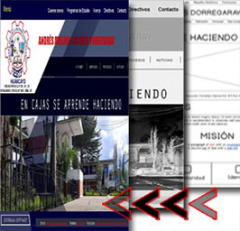
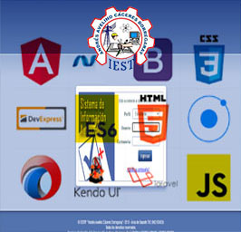
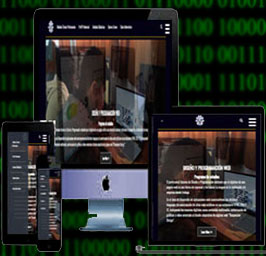

PLANA DE ESTUDIOS
Presentecion
La tecnologia no deja de sorprendernos. por eso las empresas siempre requeriran Tecnicos Profesionales en computacion y soluciones informaticas en el desarrollo, asi como el soporte de nuevos sistemas y tecnologias. Actualmente toda empresa nesecitan tecnicos informaticos puesto que al trabajar con redes de todo tipo nesesita asistencia Tecnica. En este sentido al precibir que las tecnologias se estan renovando se nesesita Profesionales que las alcancen, desarrollen y brinden soporte en tecnologias mediante el uso de herramientas de Internet. Por ello podemos afirmar que la carrera de Diseño y Programacion Web es una de las carreras que tiene demanda laboral en nuestro Pais y es mas en nuestra Region Junin
MODULOS PROFESIONALES
Código de la carrera profesional: J2663-3-003
Carrera profesional: Diseño y Programación Web
Nivel de formación: Técnico-Profesional
MODULO 01
Diseño Web y Aplicaciones Multimedia

Utiliza de manera adecuada los elementos estructurales de la semantica del codigo HTML 5 (del lenguaje de etiquetas)
Discriminar las herramientas de Diseño grafico de acuerdo a los requerimientos y especificaciones tecnicas del diseño web y las aplicaciones multimedia.
Desarrollar un producto multimedia.
Identificado las caracteristicas y herramientas del proceso de realizacion de productos multimedia para su desarrollo y publicacion segun requerimientos del Cliente.
MODULO 02
Aplicaciones Web

Elabora el Diseño logico de una Aplicacion deacuerdo al analisis de sistemas y el requerimiento del cliente utilizando las normas de codificacion estandarizadas.
Implemeta y valida el sistema de base de datos deacuerdo a la arquitectura de los servicios de sistemas de informacion y sus tecnologias.
Explica el proceso global de solucion de un problema usando un problema de computadoras.
Construye aplicaciones haciendo uso de elementos de Programacion.
MODULO 03
Integracion Aplicaciones Web y Moviles

Resuelve ejercicios propuestos de logica proporcional relacionado al proceso de Datos.
Plantea y resuelve problemas de silogismo mediante el razonamiento deductivo.
Plantea problemas de tratamiento de datos y programacion aplicando una metologia para la solucion.
Implemeta y valida el sistema de base de datos deacuerdo a la arquitectura de los servicios de sistemas de informacion y sus tecnologias.